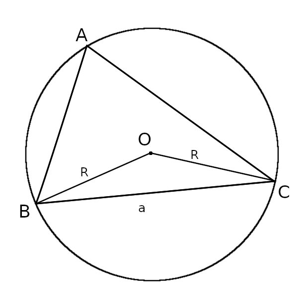

Consider the situation below:

Here point 'O' is the circumcenter. By a property of the circle ∠BOC = 2∠BAC = 2∠A (per the usual notation of triangle angles). Since OB=OC=R, the triangle BOC is actually isosceles. Considering that triangle,
R = (a/2) / sin A
= (a/2) / √ ( 1 - cos^2 A )
Applying cosine law,
R
= (a/2) / √ ( 1 - ((b^2 + c^2 - a^2)/2bc)^2 ) )
= (a/2 * 2bc) / √ ( (2bc)^2 - (b^2 + c^2 = a^2)^2 )
= abc / √ ( [2bc + b^2 + c^2 - a^2] [2bc - b^2 - c^2 + a^2] )
= abc / √ ( [(b+c)^2 - a^2 ] [a^2 - (b-c)^2 ] )
= abc / √ ( (b + c - a) (b + c + a) (a - b + c) (a + b - c) )
= abc / √ ( (a + b + c) (-a + b + c) (a - b + c) (a + b -c) )
= abc / (2 √(s (s - a) (s - b) (s - c) )
= abc / (2 * Area )
Where s = (a+b+c)/2 as usual.